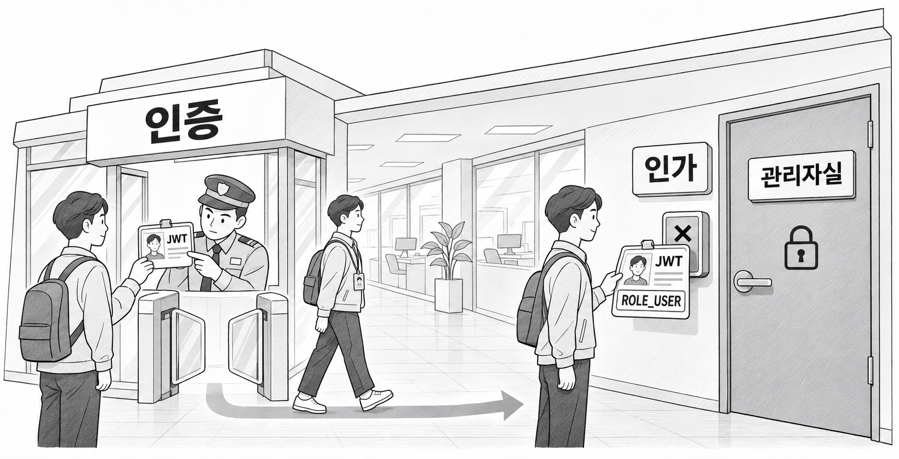
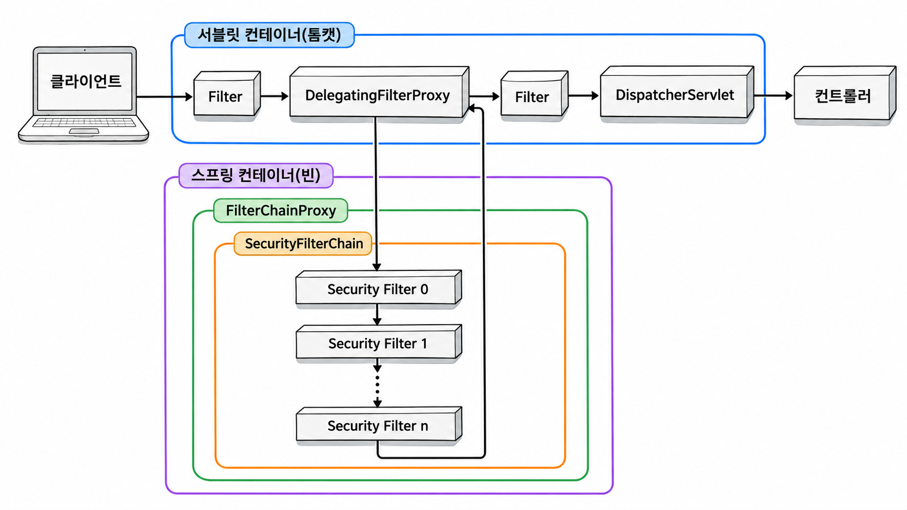
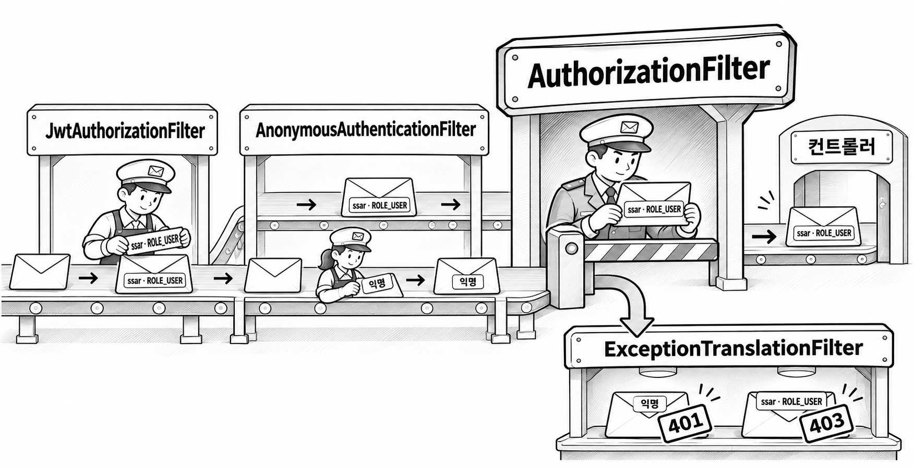
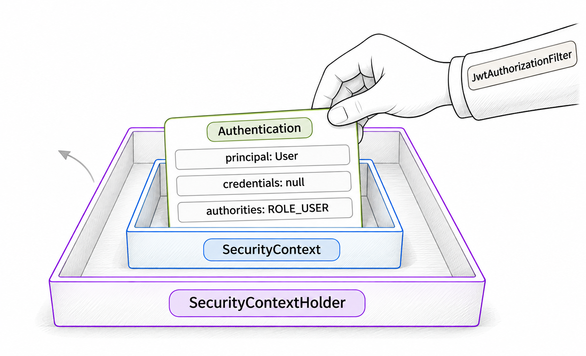

5장. 스프링 시큐리티란?
2장에서 만든 User 엔티티와 3장의 JwtUtil, 4장의 공통 응답은 아직 서로 이어져 있지 않습니다. 스프링 시큐리티는 컨트롤러보다 앞에서 요청을 검사합니다. 이 장에서는 그 검사가 어떤 구조로 이루어지는지 보고, JWT를 검사해 시큐리티에 알려 주는 클래스 두 개를 만듭니다. 이 두 클래스는 요청을 직접 막지 않습니다. 토큰이 유효하면 "이 요청은 누가 보냈다"는 표시만 남깁니다.
1. 인증과 인가
1.1 인증과 인가의 정의
인증(Authentication)은 요청을 보낸 사람이 누구인지 확인하는 일입니다. 세션 방식에서는 로그인할 때 아이디와 비밀번호를 대조해 인증하고, 그 결과를 세션에 저장했습니다. JWT 방식에서는 로그인할 때 한 번 인증한 뒤 토큰을 발급합니다. 그다음 요청부터는 요청에 담긴 토큰의 서명을 검증해서 누가 보냈는지 확인합니다.
인가(Authorization)는 인증된 사용자가 이 기능을 써도 되는지 판단하는 일입니다. 같은 로그인 사용자라도 일반 회원은 관리자 API를 쓸 수 없고, 남의 게시글을 수정할 수도 없습니다. 인가는 인증 다음에 옵니다. 누구인지 모르면 권한도 판단할 수 없기 때문입니다.
| 구분 | 묻는 것 | 이 책에서 판단하는 근거 |
|---|---|---|
| 인증(Authentication) | 누구인가? | 요청 헤더의 JWT |
| 인가(Authorization) | 이 기능을 쓸 권한이 있는가? | 토큰에 든 역할(roles), 게시글 작성자 등 |

그림 5-1처럼 건물에 들어온 사람이라도 모든 방에 들어갈 수는 없습니다. 출입증은 들어온 사람이 누구인지 알려 줄 뿐입니다. 어느 방에 들어갈 수 있는지는 출입증에 적힌 권한을 보고 따로 판단합니다.
1.2 401과 403
인증에 실패했는지 인가에 실패했는지에 따라 응답 상태 코드가 다릅니다. 401은 요청자가 누구인지 서버가 모르는 상태입니다. 403은 누구인지는 알지만 그 사람에게 권한이 없는 상태입니다.
| 상태 코드 | 이름 | 실패한 단계 | 이 책의 예 |
|---|---|---|---|
| 401 | Unauthorized | 인증 | 토큰 없이 /api/users/me 요청 |
| 403 | Forbidden | 인가 | USER 역할의 토큰으로 /api/admin/hello 요청 |
401의 이름은 Unauthorized이지만 실제 뜻은 인증 실패입니다. 이름만 보고 인가 실패로 착각하기 쉬우므로 주의합니다. 4장에서 만든 예외 가운데 UnauthorizedException과 ForbiddenException도 이 기준에 맞춰 나누었습니다. 클라이언트도 두 코드를 다르게 처리합니다. 401을 받으면 로그인 화면으로 보내고, 403을 받으면 권한이 없다는 안내를 띄웁니다.
2. 시큐리티 필터 체인 구조
2.1 서블릿 필터와 FilterChainProxy
서블릿 필터(Filter)는 요청이 서블릿에 닿기 전과 응답이 나가기 전에 끼어드는 객체입니다. 스프링 MVC에서는 모든 요청이 DispatcherServlet이라는 서블릿 하나를 거쳐 컨트롤러로 갑니다. 그래서 필터는 컨트롤러보다 먼저 실행됩니다. 필터는 여러 개가 사슬처럼 이어져 있는데, 이것을 필터 체인(FilterChain)이라고 합니다. 각 필터는 자기 일을 마친 뒤 chain.doFilter()를 호출해 요청을 다음 필터로 넘깁니다. 넘기지 않으면 요청은 그 자리에서 멈춥니다.
기본 문법
public class 필터이름 implements Filter {
@Override
public void doFilter(ServletRequest request, ServletResponse response, FilterChain chain)
throws IOException, ServletException {
// 요청이 서블릿에 가기 전에 할 일
chain.doFilter(request, response); // 다음 필터로 넘긴다
// 응답이 나갈 때 할 일
}
}필터는 톰캣 같은 서블릿 컨테이너가 관리합니다. 서블릿 컨테이너는 스프링 빈을 모르기 때문에, 시큐리티는 둘을 연결하는 다리를 둡니다. 서블릿 컨테이너에는 DelegatingFilterProxy라는 필터 하나만 등록됩니다. 이 필터는 직접 일하지 않고, 요청을 스프링 빈인 FilterChainProxy에 넘깁니다. 시큐리티의 실제 검사는 모두 FilterChainProxy 안에서 이루어집니다.

스프링 부트를 쓰면 이 연결은 자동으로 설정됩니다. 1장에서 spring-boot-starter-security만 추가했는데도 모든 요청이 로그인 화면으로 간 것은 이 구조가 이미 동작했기 때문입니다.
2.2 SecurityFilterChain과 시큐리티 필터
SecurityFilterChain은 시큐리티 필터 여러 개를 순서대로 묶은 목록입니다. FilterChainProxy는 요청이 오면 그 요청에 맞는 SecurityFilterChain을 골라 안의 필터를 차례로 실행합니다. 필터마다 맡는 일이 다릅니다. 어떤 필터는 CORS를 처리하고, 어떤 필터는 로그인 폼을 처리하며, 어떤 필터는 마지막에 접근을 허용할지 결정합니다.
1장에서 본 기본 로그인 화면도 스프링 부트가 만든 기본 SecurityFilterChain에서 나온 것입니다. 그 안에 폼 로그인 필터가 들어 있습니다. 이 책은 6장에서 SecurityFilterChain을 직접 빈으로 등록합니다. 그러면 스프링 부트는 기본 SecurityFilterChain을 만들지 않고 우리가 정한 필터 목록을 씁니다. 이때 쓰지 않는 필터는 빼고, 이 장에서 만드는 JWT 필터를 끼워 넣습니다.
2.3 필터 실행 순서
시큐리티 필터는 정해진 순서로 실행됩니다. 아래 표는 6장 설정을 마친 뒤 이 책의 프로젝트에서 요청이 지나가는 주요 필터입니다. 실제 목록에는 내부용 필터가 몇 개 더 있습니다. 4번과 7번은 6장에서 기능을 끄므로 실제 체인에서는 빠집니다. 순서를 이해하는 기준으로 쓰려고 표에 함께 적었습니다.
| 순서 | 필터 | 하는 일 |
|---|---|---|
| 1 | SecurityContextHolderFilter | 인증 정보를 담을 보관소(SecurityContext)를 준비 |
| 2 | HeaderWriterFilter | X-Frame-Options 같은 보안 응답 헤더 추가 |
| 3 | CorsFilter | CORS 검사와 사전 요청(Preflight) 응답 |
| 4 | CsrfFilter | CSRF 토큰 검사(이 책에서는 끄므로 체인에서 빠짐) |
| 5 | LogoutFilter | 로그아웃 요청 처리 |
| 6 | JwtAuthorizationFilter | 이 장에서 만드는 필터. 토큰이 유효하면 인증 정보를 넣음 |
| 7 | UsernamePasswordAuthenticationFilter | 폼 로그인 처리(이 책에서는 끄므로 체인에서 빠짐. JWT 필터 위치의 기준으로만 쓰임) |
| 8 | AnonymousAuthenticationFilter | 인증 정보가 없으면 익명 사용자로 채움 |
| 9 | ExceptionTranslationFilter | 뒤에서 난 인증·인가 예외를 401·403 응답으로 바꿈 |
| 10 | AuthorizationFilter | URL 규칙에 따라 허용·거부를 최종 결정 |
표에서 볼 점은 두 가지입니다. 첫째, JwtAuthorizationFilter는 AuthorizationFilter보다 앞에 있습니다. 토큰을 읽어 인증 정보를 먼저 넣어 두어야 뒤쪽 필터가 권한을 판단할 수 있습니다. 둘째, 허용과 거부는 맨 뒤의 AuthorizationFilter가 결정합니다. 이 필터가 거부하면서 던진 예외는 바로 앞의 ExceptionTranslationFilter가 받습니다. ExceptionTranslationFilter는 요청자가 인증 정보 없는 익명 사용자였다면 401 응답으로, 인증은 되었지만 권한이 부족하면 403 응답으로 바꿉니다.

2.4 Filter와 AOP 비교
필터와 AOP는 둘 다 여러 요청에 공통으로 필요한 일을 한곳에 모읍니다. 차이는 끼어드는 자리입니다. 필터는 DispatcherServlet에 닿기 전에 HTTP 요청 단위로 동작합니다. AOP는 스프링 빈의 메서드를 호출할 때 그 앞뒤에서 동작합니다.
| 구분 | Filter | AOP |
|---|---|---|
| 끼어드는 자리 | DispatcherServlet 앞 | 스프링 빈(컨트롤러·서비스) 메서드 앞뒤 |
| 다루는 단위 | HTTP 요청과 응답 | 메서드 호출 |
| 실행 주체 | 서블릿 컨테이너(시큐리티 필터는 FilterChainProxy를 거쳐 실행) | 스프링 컨테이너가 만든 프록시 |
| 주 용도 | 인증, CORS, 인코딩, 요청 로깅 | 트랜잭션, 메서드 단위 공통 처리 |
| 이 책의 예 | JwtAuthorizationFilter | @Transactional |
인증을 필터에서 처리하는 이유는 이 자리 때문입니다. 잘못된 요청은 컨트롤러와 서비스에 닿기 전에 걸러야 안전합니다. 또 필터에서 거부한 요청은 스프링 MVC가 처리하지 않습니다. 단, 필터는 DispatcherServlet보다 앞에 있으므로 필터에서 난 예외는 4장의 GlobalExceptionHandler가 받지 못합니다. 필터 단계의 401·403 응답을 따로 만드는 일은 6장에서 다룹니다.
3. JwtProvider
3장의 JwtUtil은 문자열만 다루는 순수 자바 클래스였습니다. HTTP 요청도 시큐리티도 모릅니다. 시큐리티 필터가 쓰려면 두 가지가 더 필요합니다. 하나는 HTTP 요청에서 토큰 문자열을 꺼내는 일이고, 다른 하나는 검증 결과를 시큐리티가 아는 형식으로 바꾸는 일입니다. JwtProvider는 이 두 일을 맡아 요청과 시큐리티를 JwtUtil에 연결합니다.
예제 5-1 — JwtProvider 만들기
파일명: src/main/java/com/newtenco/blog/core/util/JwtProvider.java
package com.newtenco.blog.core.util;
import com.newtenco.blog.user.User;
import jakarta.servlet.http.HttpServletRequest;
import org.springframework.security.authentication.UsernamePasswordAuthenticationToken;
import org.springframework.security.core.Authentication;
import org.springframework.stereotype.Component;
/**
* HTTP 요청과 시큐리티를 JwtUtil 에 연결하는 다리.
* 1) 요청 헤더에서 토큰을 꺼내고 2) 검증한 뒤 3) 시큐리티용 인증 객체로 바꿔 준다.
*/
@Component
public class JwtProvider {
// Authorization: Bearer eyJ... 에서 "Bearer " 를 뗀 순수 토큰만 꺼낸다
public String resolveToken(HttpServletRequest request) {
String bearerToken = request.getHeader(JwtUtil.HEADER);
if (bearerToken != null && bearerToken.startsWith(JwtUtil.TOKEN_PREFIX)) {
return bearerToken.substring(JwtUtil.TOKEN_PREFIX.length());
}
return null;
}
// 토큰이 유효하면 Authentication, 아니면 null
public Authentication getAuthentication(String token) {
try {
User user = JwtUtil.verify(token);
return new UsernamePasswordAuthenticationToken(user, null, user.getAuthorities());
} catch (Exception e) {
return null;
}
}
}JwtProvider는 @Component로 빈으로 등록합니다. 4절의 필터가 생성자로 이 빈을 받아 씁니다.
3.1 헤더에서 토큰 꺼내기 resolveToken()
클라이언트는 토큰을 Authorization 헤더에 Bearer 접두사를 붙여 보냅니다. 3장에서 JwtUtil.create()가 "Bearer "를 붙여 반환했으니, 클라이언트는 받은 값을 그대로 헤더에 넣으면 됩니다. resolveToken()은 이 헤더 값에서 접두사를 떼고 서명 검증에 쓸 순수 토큰만 돌려줍니다.
Authorization 헤더 값 | resolveToken() 결과 |
|---|---|
Bearer eyJhbGci... | eyJhbGci... |
| 헤더 없음 | null |
eyJhbGci... (Bearer 없음) | null |
TOKEN_PREFIX는 공백까지 포함한 7글자 "Bearer "입니다. 그래서 substring(7)과 같은 결과가 나옵니다. 숫자 7을 직접 쓰지 않고 상수의 길이를 쓰면, 접두사를 바꿔도 이 코드는 고칠 필요가 없습니다. 접두사가 없는 값을 null로 처리하는 것은 형식이 틀린 헤더를 토큰으로 착각해 검증하는 일을 막기 위해서입니다.
3.2 Authentication과 getAuthentication()
Authentication은 시큐리티가 "이 요청을 보낸 사용자는 누구이고 어떤 권한을 가졌는가"를 담는 객체입니다. 뒤쪽의 AuthorizationFilter와 컨트롤러는 사용자를 판단할 때 이 객체만 봅니다. 그래서 토큰을 검증한 결과도 Authentication으로 바꿔야 시큐리티가 알아봅니다.
getAuthentication()은 먼저 JwtUtil.verify()로 서명과 만료 시각을 검증합니다. 검증에 성공하면 토큰에 든 id·username·roles로 User를 만듭니다. 이 User는 DB에서 조회한 것이 아닙니다. 그다음 이 User를 Authentication의 구현체인 UsernamePasswordAuthenticationToken에 담습니다. 클래스 이름에 Username·Password가 들어 있지만, 인증된 사용자 정보를 담는 일반 용도로도 씁니다.
| 생성자 인자 | 넣는 값 | 이유 |
|---|---|---|
| principal(사용자) | 토큰에서 복원한 User | 8장에서 @AuthenticationPrincipal로 꺼내 씁니다 |
| credentials(비밀번호) | null | 토큰으로 이미 검증했으므로 필요 없습니다 |
| authorities(권한) | user.getAuthorities() | URL 규칙의 hasRole() 검사에 쓰입니다 |
권한 목록까지 받는 세 인자 생성자로 만든 객체는 인증이 끝난 상태로 표시됩니다. 2장에서 getAuthorities()가 역할 앞에 ROLE_을 붙여 ROLE_USER처럼 돌려주도록 만들었습니다. 그래서 6장의 hasRole("ADMIN") 규칙이 이 권한 목록과 맞아떨어집니다.
verify()는 서명이 틀리거나 만료된 토큰이면 JWTVerificationException을 던집니다. getAuthentication()은 catch (Exception e)로 이 예외를 포함한 모든 예외를 잡아 null을 반환합니다. 토큰을 읽다가 어떤 이유로 실패하든 인증 정보 없이 다음 필터로 넘기려는 것입니다. 예외를 필터 밖으로 던지지 않는 이유는 4.3에서 봅니다.
4. JwtAuthorizationFilter
JwtAuthorizationFilter는 요청마다 실행되는 JWT 검문소입니다. JwtProvider로 토큰을 꺼내 검증하고, 유효하면 인증 정보를 시큐리티에 넣어 둡니다.
예제 5-2 — JwtAuthorizationFilter 만들기
이어서: 예제 5-1
파일명: src/main/java/com/newtenco/blog/core/filter/JwtAuthorizationFilter.java
package com.newtenco.blog.core.filter;
import com.newtenco.blog.core.util.JwtProvider;
import jakarta.servlet.FilterChain;
import jakarta.servlet.ServletException;
import jakarta.servlet.http.HttpServletRequest;
import jakarta.servlet.http.HttpServletResponse;
import lombok.RequiredArgsConstructor;
import org.springframework.security.core.Authentication;
import org.springframework.security.core.context.SecurityContextHolder;
import org.springframework.web.filter.OncePerRequestFilter;
import java.io.IOException;
/**
* 모든 요청마다 한 번 실행되는 JWT 검문소.
* 토큰이 유효하면 이번 요청 동안만 SecurityContextHolder 에 인증 정보를 넣어 둔다.
* 토큰이 없거나 틀려도 여기서 막지 않는다. 막을지 말지는 SecurityConfig 의 URL 규칙이 결정한다.
*/
@RequiredArgsConstructor
public class JwtAuthorizationFilter extends OncePerRequestFilter {
private final JwtProvider jwtProvider;
@Override
protected void doFilterInternal(HttpServletRequest request, HttpServletResponse response, FilterChain filterChain)
throws ServletException, IOException {
String token = jwtProvider.resolveToken(request);
if (token != null) {
Authentication authentication = jwtProvider.getAuthentication(token);
if (authentication != null) {
SecurityContextHolder.getContext().setAuthentication(authentication);
}
}
filterChain.doFilter(request, response);
}
}실행 결과
IntelliJ IDEA에서 BlogApplication을 실행하면 오류 없이 서버가 시작됩니다. 콘솔 로그 마지막 부분에 다음과 같은 줄이 보입니다(시간과 실행 시간은 실행할 때마다 다릅니다).
Started BlogApplication in 3.512 seconds (process running for 3.981)이 필터는 아직 어떤 요청에도 실행되지 않습니다. 6장에서 SecurityFilterChain에 등록해야 동작하고, 그때 401 응답으로 결과를 확인합니다.
JwtAuthorizationFilter에는 @Component를 붙이지 않았습니다. 스프링 부트는 빈으로 등록된 필터를 서블릿 컨테이너의 필터 체인에도 자동으로 넣습니다. 이 필터를 빈으로 만들면 시큐리티 필터 체인 밖에서 한 번 더 실행됩니다. 그래서 6장에서 new JwtAuthorizationFilter(jwtProvider)로 직접 만들어 시큐리티 필터 체인에만 넣습니다.
4.1 OncePerRequestFilter
OncePerRequestFilter는 스프링이 제공하는 필터 부모 클래스로, 한 요청에 한 번만 실행되는 것을 보장합니다. 요청 하나가 필터 체인을 여러 번 지나갈 때가 있습니다. 예를 들어 처리 중 오류가 나서 서버 안에서 /error로 다시 보낼 때입니다. 일반 Filter는 이럴 때 다시 실행되어 토큰을 한 번 더 검증합니다. OncePerRequestFilter는 이미 실행한 요청이면 건너뜁니다.
기본 문법
public class 필터이름 extends OncePerRequestFilter {
@Override
protected void doFilterInternal(HttpServletRequest request, HttpServletResponse response, FilterChain filterChain)
throws ServletException, IOException {
// 요청마다 한 번 할 일
filterChain.doFilter(request, response);
}
}할 일은 doFilterInternal()에 씁니다. 매개변수가 HttpServletRequest로 들어오므로 형 변환 없이 바로 헤더를 읽을 수 있습니다. 메서드 끝의 filterChain.doFilter()는 빠뜨리면 안 됩니다. 이 호출이 없으면 요청이 다음 필터로 가지 못하고 빈 응답이 나갑니다.
4.2 SecurityContextHolder에 인증 정보 넣기
SecurityContextHolder는 현재 요청의 인증 정보를 보관하는 곳입니다. 그 안에 SecurityContext가 있고, SecurityContext 안에 Authentication이 들어갑니다. 뒤쪽의 AuthorizationFilter, 컨트롤러, 서비스는 모두 여기서 Authentication을 꺼내 사용자를 판단합니다.

SecurityContextHolder는 기본적으로 스레드마다 따로 보관합니다. 톰캣은 요청 하나를 스레드 하나로 처리하므로, 동시에 들어온 다른 사용자의 요청과 인증 정보가 섞이지 않습니다.
세션 방식과 다른 점은 보관 기간입니다. 세션 방식에서는 인증 정보를 세션에 저장해 다음 요청에서 다시 꺼내 썼습니다. 이 책은 6장에서 세션을 쓰지 않도록(STATELESS) 설정하므로, 넣어 둔 인증 정보는 요청이 끝나면 지워집니다. 다음 요청이 오면 필터가 토큰을 처음부터 다시 검증합니다. 3장에서 본 Stateless 방식이 코드에서는 이렇게 나타납니다.
4.3 토큰이 없거나 만료·위조되었을 때
JwtAuthorizationFilter는 토큰 상태와 상관없이 마지막에 항상 filterChain.doFilter()를 호출합니다. 토큰에 문제가 있으면 인증 정보를 넣지 않을 뿐, 요청을 막지 않습니다.
| 토큰 상태 | 필터가 하는 일 | 뒤쪽 결과 |
|---|---|---|
| 없음 | 아무것도 넣지 않고 다음 필터로 | 공개 주소는 통과, 보호 주소는 401 |
| 만료·위조 | 아무것도 넣지 않고 다음 필터로 | 공개 주소는 통과, 보호 주소는 401 |
| 유효 | SecurityContextHolder에 Authentication 저장 | 권한 규칙에 따라 통과 또는 403 |
필터에서 막지 않는 이유는 공개 주소가 있기 때문입니다. 게시글 목록이나 회원가입은 로그인하지 않아도 쓸 수 있어야 합니다. 필터가 토큰 없는 요청을 모두 401로 막으면 회원가입조차 할 수 없습니다. 만료된 토큰이 남아 있는 사용자도 공개 주소는 그대로 쓸 수 있어야 합니다. 그래서 필터는 "누구인지 알았으면 표시한다"까지만 하고, 막을지는 주소별 규칙을 아는 AuthorizationFilter에 맡깁니다.
getAuthentication()이 예외 대신 null을 반환한 이유도 같습니다. 인증 정보 없이 지나간 요청이 보호 주소에 닿으면, 2.3에서 본 흐름대로 ExceptionTranslationFilter가 401 응답을 만듭니다. 401 응답이 나오는 곳을 한 군데로 모으려고 필터에서 예외를 던지지 않은 것입니다.
5. CORS와 CSRF
CORS와 CSRF는 둘 다 다른 사이트가 끼어드는 요청과 관련 있어서 자주 헷갈립니다. CORS는 브라우저가 다른 출처로 보내는 요청을 서버가 허락하는 규칙입니다. CSRF는 다른 사이트가 사용자의 로그인 상태를 악용하는 공격입니다.
5.1 출처와 CORS
출처(Origin)는 프로토콜·도메인·포트를 합친 것입니다. 셋 가운데 하나라도 다르면 다른 출처입니다.
| 요청을 보내는 화면 | 요청 주소 | 같은 출처인가 |
|---|---|---|
http://localhost:8080 | http://localhost:8080/login | 같음 |
http://localhost:5173 (React 개발 서버) | http://localhost:8080/login | 다름(포트) |
chrome-extension://aejo... (Talend API Tester) | http://localhost:8080/login | 다름(프로토콜·도메인) |
SSR 프로젝트에서는 화면과 API가 같은 서버에서 나왔으므로 출처가 같았습니다. REST API 서버는 다른 출처의 프런트엔드가 호출합니다. 브라우저는 기본적으로 다른 출처로 보낸 요청의 응답을 자바스크립트에 넘겨주지 않습니다. 이 제한을 동일 출처 정책(Same-Origin Policy)이라고 합니다. CORS(Cross-Origin Resource Sharing)는 서버가 응답 헤더로 "이 출처는 허용한다"고 알려 이 제한을 풀어 주는 규칙입니다.
브라우저는 다른 출처로 요청할 때 Origin 헤더에 자기 출처를 담아 보냅니다. 서버의 CorsFilter는 이 값을 허용 목록과 비교합니다. 허용 목록에 있으면 응답에 Access-Control-Allow-Origin 헤더를 붙입니다. 목록에 없으면 스프링의 CORS 처리는 403 상태 코드와 Invalid CORS request 본문으로 요청을 거절합니다. 1장의 application.properties에 허용 출처를 적어 둔 것은 이 목록을 만들기 위해서입니다. chrome-extension://*을 넣은 이유도 Talend API Tester의 요청이 다른 출처이기 때문입니다. 이 값을 읽어 CORS를 설정하는 코드는 6장에서 작성합니다.
5.2 사전 요청(Preflight)
브라우저는 단순하지 않은 요청을 보내기 전에 사전 요청(Preflight)을 먼저 보냅니다. 사전 요청은 OPTIONS 메서드로 "이 메서드와 헤더로 요청해도 되는가"를 서버에 묻는 요청입니다. Authorization 헤더를 붙인 요청, Content-Type: application/json으로 본문을 보내는 요청이 여기에 해당합니다. 이 책의 API는 거의 모두 이 조건에 걸립니다.
코드 조각
OPTIONS /login HTTP/1.1
Origin: http://localhost:5173
Access-Control-Request-Method: POST
Access-Control-Request-Headers: content-type
HTTP/1.1 200
Access-Control-Allow-Origin: http://localhost:5173
Access-Control-Allow-Methods: GET,POST,PUT,DELETE서버가 허용한다고 답해야 브라우저가 실제 POST /login 요청을 보냅니다. 사전 요청에는 Authorization 헤더가 붙지 않는다는 점에 주의합니다. 그래서 사전 요청을 인증이 필요한 요청으로 취급하면 401로 막혀 실제 요청까지 가지 못합니다. 이 문제를 막으려고 6장 URL 규칙에서 OPTIONS 요청은 인증 없이 허용합니다.
5.3 CSRF와 JWT 방식
CSRF(Cross-Site Request Forgery, 사이트 간 요청 위조)는 브라우저가 쿠키를 자동으로 붙여 보낸다는 점을 이용하는 공격입니다. 사용자가 우리 사이트에 로그인한 채로 공격자의 사이트를 열었다고 해 봅시다. 공격자의 페이지가 우리 서버로 글 삭제 요청을 보내게 만들면, 브라우저는 세션 쿠키를 자동으로 붙입니다. 서버는 이 요청을 로그인한 사용자가 보낸 정상 요청으로 받아들입니다.
시큐리티의 CsrfFilter는 이를 막으려고 POST·PUT·DELETE 같은 상태를 바꾸는 요청에 CSRF 토큰을 요구합니다. 공격자의 페이지는 이 토큰 값을 알 수 없습니다. CSRF 보호를 켜 둔 채로 이 책의 API에 POST 요청을 보내면 CSRF 토큰이 없어서 403으로 거절됩니다.
| 인증 정보를 보내는 방법 | 브라우저가 자동으로 붙이는가 | CSRF 위험 |
|---|---|---|
| 쿠키(세션 방식) | 붙임 | 있음 |
Authorization 헤더(JWT 방식) | 붙이지 않음. 프런트엔드 코드가 직접 넣음 | 없음 |
이 책은 토큰을 Authorization 헤더로 보냅니다. 공격자의 페이지가 요청을 보내게 만들어도 헤더에 토큰이 없으므로 인증되지 않습니다. 그래서 6장에서 CSRF 보호를 끕니다. 이 판단은 토큰을 헤더로 보낼 때만 성립합니다. 토큰을 쿠키에 담아 보내도록 바꾸면 CSRF 위험이 다시 생기므로 보호를 켜야 합니다.